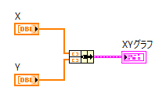
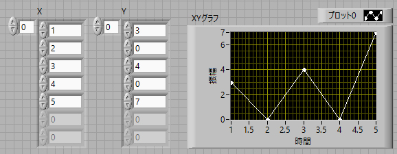
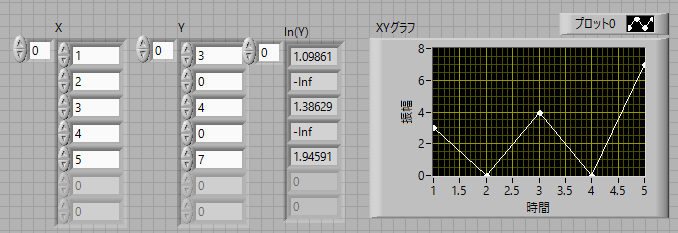
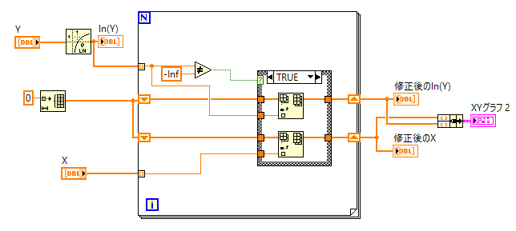
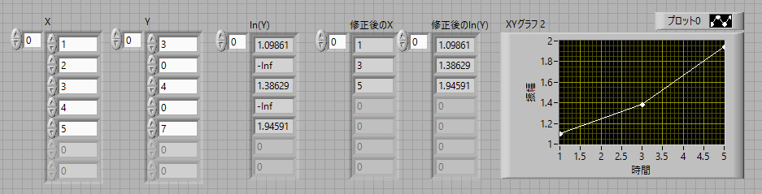

-Inf，が出てきたら
X，Yの配列からXYグラフを作成する場合には，

というプログラムを作ればできあがります．フロントパネルは，

となっています．
問題は，
片対数で表示したい （＝ln Y で表示したい）
場合に，不都合なことが現れます．具体的には，

と，ln(0)が計算不能となり，"-Inf"，という表示となります．
これでもグラフは作成できます（その場合は0を示すようです），が，”近似曲線”などを行おうとすると，エラーが発生します．
何とか，"-Inf"，を削除できないかと思ったところ，意外な事実がわかりました．それは，
-Inf も数字として認識する
と言うものです．つまり，
-Inf と言う値の場合，その配列を削除する
or
-Inf 以外の配列だけをピックアップする
という方法が使えます．
今回は後者の手法を用いてみましょう．
この場合には，ケースストラクチャ，シフトレジスタ，を使います．
具体的なプログラムは，

となります．-Inf，をあたかも数値のように扱っていますね．
注意すべき点は，Xの配列も同様の処理をしていることです．
Yだけだと配列の数が変わってしまいます．
また，ケースストラクチャの，false，は直結しています．
結果が以下の通りです．

このように，Yの配列の条件により，X，Yの配列を修正していることがわかります．